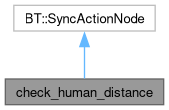

node tree the checks the position of the human in respect to the robot's one More...
#include <check_human_distance.hpp>
Inheritance diagram for check_human_distance:

Collaboration diagram for check_human_distance:

Public Types | |
| using | point = geometry_msgs::msg::Point |
| using | human_msg = human_msgs::msg::Human |
Public Member Functions | |
| check_human_distance (const std::string &, const BT::NodeConfig &) | |
| constructor of the tree node | |
| BT::NodeStatus | tick () override |
| checks if the human wheter in the robot range or not | |
| constexpr double | euclidean_distance (const point &p1, const point &p2) |
| helper function to calculate the euclidean distance in 3D space | |
Static Public Member Functions | |
| static BT::PortsList | providedPorts () |
| override of the helper function of behaviour trees used to tell which part of the blackboard the node can access | |
Private Attributes | |
| geometry_msgs::msg::Point | base_link |
| position of the base_link of the robot in the 3d world | |
Detailed Description
node tree the checks the position of the human in respect to the robot's one
- Note
- the robot position is assumed to be the base_link, the human can interact with the robot is he's at most ARM_LENGTH from the robot
Constructor & Destructor Documentation
◆ check_human_distance()
| check_human_distance::check_human_distance | ( | const std::string & | name, |
| const BT::NodeConfig & | config | ||
| ) |
constructor of the tree node
- Parameters
-
name node name config configuration of the node
Member Function Documentation
◆ euclidean_distance()
|
inlineconstexpr |
helper function to calculate the euclidean distance in 3D space
- Parameters
-
p1 first point p2 second point
◆ tick()
|
override |
checks if the human wheter in the robot range or not
- Note
- if there's no data about the human being published the node assumes the human is out of range. returns SUCCESS if human is close enough to the robot, so if he is within the robot length
The documentation for this class was generated from the following files:
- /github/workspace/src/mtc/mtc_client/include/mtc_client/check_human_distance.hpp
- /github/workspace/src/mtc/mtc_client/src/check_human_distance.cpp